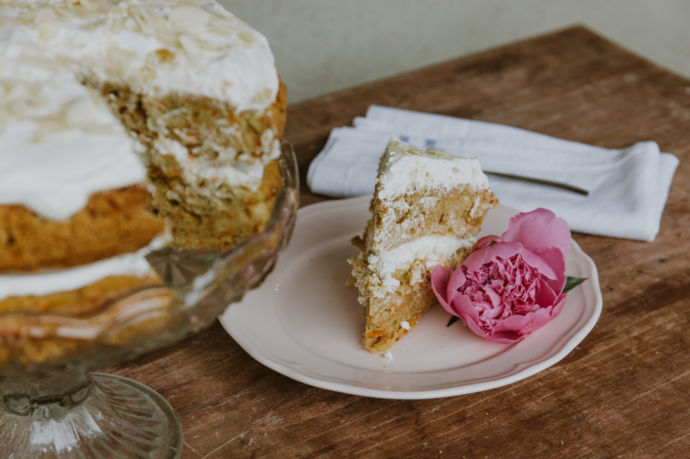

This decadent, homemade treat is perfect for spending a cozy day indoors. Grab your carrots and pecans and get ready to make one of my favorite desserts! Each slice has a beautiful crust, and will melt in your mouth. Top it off with a warm and gooey frosting on top, and you will burst after trying these entrancing sweets. Any time of the year is perfect for carrot cake!
Now this is your classic, homemade carrot cake. With lot's of trial and error, I have finally developed a method to make a treat that is just the right amount of sweet. I guarentee that this cake will be satisfying!
The Best Carrot Cake In Town
Here are some of the reasons why you would want to make this cake:
- Perfect Anniversary dessert
- Not too sweet, unlike store bought cakes
- Not many kitchen appliances needed
- Fluffy and flavorful
- Perfect for any occasion

Key Ingredients
For the Cake
- 2 cups (260 grams) all-purpose flour
- 2 teaspoons baking soda
- 1/2 teaspoon fine sea salt
- 1 ½ teaspoons ground cinnamon
- 1 ¼ cups (295 ml) canola or other vegetable oil
- 1 cup (200 grams) granulated sugar
- 1 cup (190 grams) lightly packed brown sugar
- 1 teaspoon vanilla extract
- 4 large eggs, at room temperature
- 3 cups (300 grams) grated peeled carrots, 5 to 6 medium carrots
- 1 cup (100 grams) coarsely chopped pecans
- 1/2 cup (65 grams) raisins
For the Frosting
- 8 ounces (225 grams) cream cheese, at room temperature
- 1 ¼ cups (140 grams) powdered sugar
- 1/3 cup (80 ml) cold heavy whipping cream
- 1/2 cup (50 grams) coarsely chopped pecans, for topping cake
Steps to Success
The Batter
- Position a rack in the middle of the oven. Grease two 9-inch round cake pans, line the bottom with parchment paper and then grease the top. Or grease and flour the bottom and sides of both pans.
- Heat the oven to 350 degrees Fahrenheit (176C).
- Whisk flour, baking soda, salt, and cinnamon in a medium bowl until very well blended.
- In a separate bowl, whisk the oil, granulated sugar, brown sugar, and vanilla.
- Add the eggs, one at a time, whisking after each one.
- Switch to a large rubber spatula. Scrape the sides and bottom of the bowl, then add the dry ingredients in three parts, gently stirring until they disappear and the batter is smooth.
- Stir in the carrots, nuts, and raisins.
Baking the Cake
- Divide the cake batter between the prepared cake pans.
- Bake until the tops of the cake layers are springy when touched and when a toothpick inserted into the center of the cake comes out clean, 35 to 45 minutes.
- Cool cakes in the pans for 15 minutes, then carefully turn the cake layers out onto cooling racks. Remove the parchment paper and cool completely. If you find that a cake layer is sticking to the bottom of the pan, leave the cake pan upside down and allow gravity to do its thing.
Finishing Touches
- In a large bowl, beat the cream cheese with a handheld mixer on medium speed until creamy, about 1 minute.
- Beat in the powdered sugar, a 1/4 cup at a time, until fluffy.
- Pour in the whipping cream. Beat on medium speed for 2 to 3 minutes, or until the frosting is whipped and creamy. This frosting resembles the texture of whipped cream. Chill covered until ready to frost the cake.
- When the cake layers are completely cool, frost the top of one cake layer, and place the second cake layer on top.
- Add the remaining frosting to the top of the carrot cake and use a butter knife or small spatula to swirl the frosting around. Leave the sides of the cake unfrosted. Finish with a handful of nuts on top.